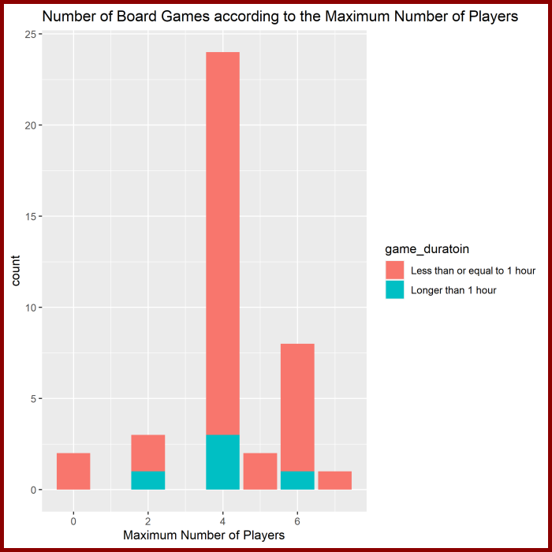

I would like to choose the word “dinosaur” to select books and board games from the Google Books API and boardgamegeek.com.
I have chosen this word because I am fascinated by different dinosaur species. As dinosaurs became extinct many years ago, which provides opportunities for writers or game makers to be creative with dinosaurs. In addition, people often associate dinosaur with excitement and power. Therefore, I guess many book writers and game makers will also use dinosaurs as the main theme of their books or board games. Thus, I believe that there would be sufficient number of results from both Google Books API and boardgamegeek.com.
Before introducing the similarity and difference in book and board game names, I think, with the word dinosaur, the books from Google Books can be mainly classified into 2 groups: fiction and non-fiction.
I think there will be similarity in fictional book and board game names with the word dinosaur. It is because both fictional books and board game would like to bring excitement and enjoyment to their readers and players. Therefore, I think the name of both books and board games will contain some adventurous elements, like using the word “escape”, “catch”, “slay”, etc.
However, for non-fiction books, the names of which will be more informative and formal.
query <- "https://www.googleapis.com/books/v1/volumes?q=intitle:%22dinosaur%22&startIndex=0&maxResults=40"
response <- fromJSON(query, flatten = TRUE)
book_data <- response$items
book_data_title_publish_date <- select(book_data,
volumeInfo.title,
volumeInfo.publishedDate)
knitr::kable(book_data_title_publish_date)| volumeInfo.title | volumeInfo.publishedDate |
|---|---|
| The Complete Dinosaur | 2012 |
| Smithsonian: The Dinosaur Book | 2018-09-18 |
| 5 Minute Dinosaur Stories | 2016 |
| Knowledge Encyclopedia Dinosaur! | 2019-10 |
| The Dinosaur That Pooped a Planet! | 2013 |
| Dinosaur Puzzles | 2017-02-28 |
| Dinosaur Bingo | 2018-07 |
| Super Dinosaur Encyclopedia | 2020-07-14 |
| The Good Dinosaur | 2015 |
| National Geographic Kids the Ultimate Dinopedia | 2010 |
| How to Catch a Dinosaur | 2019-09 |
| Danny and the Dinosaur: School Days | 2017-06-20 |
| Dazzle the Dinosaur | 1994 |
| The Dinosaur That Pooped Christmas! | 2019-09-17 |
| First Dinosaur Encyclopedia | 2016-06-01 |
| The Dinosaur Museum | 2008 |
| Eat Like a Dinosaur | 2012-03-20 |
| Dinosaur Therapy | 2021-08-19 |
| A Dinosaur Named Ruth | 2021-10-12 |
| The Super Hungry Dinosaur | 2009 |
| Dinosaur Dreams | 2005 |
| Jurassic World Dinosaur Field Guide | 2015 |
| Dinosaur Art: The World’s Greatest Paleoart | 2012-09-04 |
| The Dinosaur Hunters | 2001 |
| Big Dinosaur Sticker Book | 2013-01-01 |
| Dinosaur Bones | 2001-06 |
| Duck, Duck, Dinosaur | 2016-02-09 |
| The Art of the Dinosaur | 2017 |
| Dinosaur Train | 2002-09-17 |
| The Dinosaur’s Diary | 2002 |
| Thomas and the Dinosaur | 2015 |
| Dad and the Dinosaur | 2017 |
| Convertible Dinosaur | 2020-03 |
| Don’t Wake the Dinosaur! | 2014-10-21 |
| Devil Dinosaur by Jack Kirby | 2014-06-17 |
| Dinosaur Atlas | 2017-10 |
| If You Were Raised by a Dinosaur | 2013-08-01 |
| A Dinosaur Cookbook | 2015-12-21 |
| The Dinosaur Hunter | 2010-11-09 |
| Dinosaurs | 2018-09-04 |
mini_data <- tibble(book_title = book_data$volumeInfo.title,
page_count = book_data$volumeInfo.pageCount,
published_date = book_data$volumeInfo.publishedDate,
publisher = book_data$volumeInfo.publisher,
book_language = book_data$volumeInfo.language,
viewability = book_data$accessInfo.viewability)
mini_data <- arrange(mini_data, page_count)
knitr::kable(mini_data)| book_title | page_count | published_date | publisher | book_language | viewability |
|---|---|---|---|---|---|
| The Good Dinosaur | 24 | 2015 | Golden/Disney | en | NO_PAGES |
| Dazzle the Dinosaur | 24 | 1994 | North South Books | en | NO_PAGES |
| The Dinosaur Museum | 24 | 2008 | National Geographic Soc Childrens books | en | NO_PAGES |
| Thomas and the Dinosaur | 24 | 2015 | Golden Books | en | NO_PAGES |
| A Dinosaur Cookbook | 24 | 2015-12-21 | Capstone | en | NO_PAGES |
| Dinosaurs | 24 | 2018-09-04 | Workman Publishing | en | NO_PAGES |
| The Dinosaur That Pooped a Planet! | 32 | 2013 | Random House | en | PARTIAL |
| Danny and the Dinosaur: School Days | 32 | 2017-06-20 | HarperCollins | en | NO_PAGES |
| The Dinosaur That Pooped Christmas! | 32 | 2019-09-17 | Aladdin | en | PARTIAL |
| The Super Hungry Dinosaur | 32 | 2009 | Dial Books | en | NO_PAGES |
| Dinosaur Dreams | 32 | 2005 | Puffin HC | en | NO_PAGES |
| Dinosaur Train | 32 | 2002-09-17 | Harper Collins | en | NO_PAGES |
| Dinosaur Atlas | 32 | 2017-10 | Lonely Planet | en | NO_PAGES |
| Big Dinosaur Sticker Book | 34 | 2013-01-01 | Usborne | en | NO_PAGES |
| Dinosaur Bones | 36 | 2001-06 | Chronicle Books | en | NO_PAGES |
| How to Catch a Dinosaur | 40 | 2019-09 | How to Catch | en | NO_PAGES |
| A Dinosaur Named Ruth | 40 | 2021-10-12 | Simon and Schuster | en | PARTIAL |
| Duck, Duck, Dinosaur | 40 | 2016-02-09 | HarperCollins | en | NO_PAGES |
| Dad and the Dinosaur | 40 | 2017 | Penguin | en | NO_PAGES |
| If You Were Raised by a Dinosaur | 80 | 2013-08-01 | Charlesbridge | en | PARTIAL |
| Don’t Wake the Dinosaur! | 111 | 2014-10-21 | Scholastic Paperbacks | en | NO_PAGES |
| The Dinosaur’s Diary | 112 | 2002 | Penguin UK | en | NO_PAGES |
| First Dinosaur Encyclopedia | 136 | 2016-06-01 | NA | en | NO_PAGES |
| Dinosaur Puzzles | 144 | 2017-02-28 | Highlights Press | en | PARTIAL |
| Dinosaur Therapy | 144 | 2021-08-19 | HarperCollins | en | NO_PAGES |
| Jurassic World Dinosaur Field Guide | 160 | 2015 | Random House Books for Young Readers | en | NO_PAGES |
| Devil Dinosaur by Jack Kirby | 184 | 2014-06-17 | Marvel | en | NO_PAGES |
| Dinosaur Art: The World’s Greatest Paleoart | 188 | 2012-09-04 | Titan Books (US, CA) | en | NO_PAGES |
| Super Dinosaur Encyclopedia | 192 | 2020-07-14 | DK Children | en | NO_PAGES |
| The Art of the Dinosaur | 200 | 2017 | Pie Books | en | NO_PAGES |
| Smithsonian: The Dinosaur Book | 208 | 2018-09-18 | DK Children | en | NO_PAGES |
| Knowledge Encyclopedia Dinosaur! | 208 | 2019-10 | NA | en | NO_PAGES |
| National Geographic Kids the Ultimate Dinopedia | 272 | 2010 | National Geographic Books | en | NO_PAGES |
| Eat Like a Dinosaur | 288 | 2012-03-20 | Victory Belt Publishing | en | NO_PAGES |
| The Dinosaur Hunter | 320 | 2010-11-09 | Thomas Dunne Books | en | NO_PAGES |
| The Dinosaur Hunters | 374 | 2001 | HarperCollins UK | en | NO_PAGES |
| The Complete Dinosaur | 1112 | 2012 | Indiana University Press | en | PARTIAL |
| 5 Minute Dinosaur Stories | NA | 2016 | Om Books International | en | PARTIAL |
| Dinosaur Bingo | NA | 2018-07 | NA | en | NO_PAGES |
| Convertible Dinosaur | NA | 2020-03 | NA | en | NO_PAGES |
mutated_data <- mutate(mini_data,
year_published = str_sub(published_date, 1, 4) %>% as.numeric(),
book_title_num_word = str_count(book_title, " ") + 1,
totally_not_viewable = ifelse(viewability == "NO_PAGES",
"Yes",
"No")
)
knitr::kable(mutated_data)| book_title | page_count | published_date | publisher | book_language | viewability | year_published | book_title_num_word | totally_not_viewable |
|---|---|---|---|---|---|---|---|---|
| The Good Dinosaur | 24 | 2015 | Golden/Disney | en | NO_PAGES | 2015 | 3 | Yes |
| Dazzle the Dinosaur | 24 | 1994 | North South Books | en | NO_PAGES | 1994 | 3 | Yes |
| The Dinosaur Museum | 24 | 2008 | National Geographic Soc Childrens books | en | NO_PAGES | 2008 | 3 | Yes |
| Thomas and the Dinosaur | 24 | 2015 | Golden Books | en | NO_PAGES | 2015 | 4 | Yes |
| A Dinosaur Cookbook | 24 | 2015-12-21 | Capstone | en | NO_PAGES | 2015 | 3 | Yes |
| Dinosaurs | 24 | 2018-09-04 | Workman Publishing | en | NO_PAGES | 2018 | 1 | Yes |
| The Dinosaur That Pooped a Planet! | 32 | 2013 | Random House | en | PARTIAL | 2013 | 6 | No |
| Danny and the Dinosaur: School Days | 32 | 2017-06-20 | HarperCollins | en | NO_PAGES | 2017 | 6 | Yes |
| The Dinosaur That Pooped Christmas! | 32 | 2019-09-17 | Aladdin | en | PARTIAL | 2019 | 5 | No |
| The Super Hungry Dinosaur | 32 | 2009 | Dial Books | en | NO_PAGES | 2009 | 4 | Yes |
| Dinosaur Dreams | 32 | 2005 | Puffin HC | en | NO_PAGES | 2005 | 2 | Yes |
| Dinosaur Train | 32 | 2002-09-17 | Harper Collins | en | NO_PAGES | 2002 | 2 | Yes |
| Dinosaur Atlas | 32 | 2017-10 | Lonely Planet | en | NO_PAGES | 2017 | 2 | Yes |
| Big Dinosaur Sticker Book | 34 | 2013-01-01 | Usborne | en | NO_PAGES | 2013 | 4 | Yes |
| Dinosaur Bones | 36 | 2001-06 | Chronicle Books | en | NO_PAGES | 2001 | 2 | Yes |
| How to Catch a Dinosaur | 40 | 2019-09 | How to Catch | en | NO_PAGES | 2019 | 5 | Yes |
| A Dinosaur Named Ruth | 40 | 2021-10-12 | Simon and Schuster | en | PARTIAL | 2021 | 4 | No |
| Duck, Duck, Dinosaur | 40 | 2016-02-09 | HarperCollins | en | NO_PAGES | 2016 | 3 | Yes |
| Dad and the Dinosaur | 40 | 2017 | Penguin | en | NO_PAGES | 2017 | 4 | Yes |
| If You Were Raised by a Dinosaur | 80 | 2013-08-01 | Charlesbridge | en | PARTIAL | 2013 | 7 | No |
| Don’t Wake the Dinosaur! | 111 | 2014-10-21 | Scholastic Paperbacks | en | NO_PAGES | 2014 | 4 | Yes |
| The Dinosaur’s Diary | 112 | 2002 | Penguin UK | en | NO_PAGES | 2002 | 3 | Yes |
| First Dinosaur Encyclopedia | 136 | 2016-06-01 | NA | en | NO_PAGES | 2016 | 3 | Yes |
| Dinosaur Puzzles | 144 | 2017-02-28 | Highlights Press | en | PARTIAL | 2017 | 2 | No |
| Dinosaur Therapy | 144 | 2021-08-19 | HarperCollins | en | NO_PAGES | 2021 | 2 | Yes |
| Jurassic World Dinosaur Field Guide | 160 | 2015 | Random House Books for Young Readers | en | NO_PAGES | 2015 | 5 | Yes |
| Devil Dinosaur by Jack Kirby | 184 | 2014-06-17 | Marvel | en | NO_PAGES | 2014 | 5 | Yes |
| Dinosaur Art: The World’s Greatest Paleoart | 188 | 2012-09-04 | Titan Books (US, CA) | en | NO_PAGES | 2012 | 6 | Yes |
| Super Dinosaur Encyclopedia | 192 | 2020-07-14 | DK Children | en | NO_PAGES | 2020 | 3 | Yes |
| The Art of the Dinosaur | 200 | 2017 | Pie Books | en | NO_PAGES | 2017 | 5 | Yes |
| Smithsonian: The Dinosaur Book | 208 | 2018-09-18 | DK Children | en | NO_PAGES | 2018 | 4 | Yes |
| Knowledge Encyclopedia Dinosaur! | 208 | 2019-10 | NA | en | NO_PAGES | 2019 | 3 | Yes |
| National Geographic Kids the Ultimate Dinopedia | 272 | 2010 | National Geographic Books | en | NO_PAGES | 2010 | 6 | Yes |
| Eat Like a Dinosaur | 288 | 2012-03-20 | Victory Belt Publishing | en | NO_PAGES | 2012 | 4 | Yes |
| The Dinosaur Hunter | 320 | 2010-11-09 | Thomas Dunne Books | en | NO_PAGES | 2010 | 3 | Yes |
| The Dinosaur Hunters | 374 | 2001 | HarperCollins UK | en | NO_PAGES | 2001 | 3 | Yes |
| The Complete Dinosaur | 1112 | 2012 | Indiana University Press | en | PARTIAL | 2012 | 3 | No |
| 5 Minute Dinosaur Stories | NA | 2016 | Om Books International | en | PARTIAL | 2016 | 4 | No |
| Dinosaur Bingo | NA | 2018-07 | NA | en | NO_PAGES | 2018 | 2 | Yes |
| Convertible Dinosaur | NA | 2020-03 | NA | en | NO_PAGES | 2020 | 2 | Yes |
summarised_data <- summarise(group_by(mutated_data, totally_not_viewable), number_of_books = n())
total_number_of_books <- nrow(book_data)
not_viewable <- summarised_data$number_of_books[1]
viewable <- summarised_data$number_of_books[2]
knitr::kable(summarised_data)| totally_not_viewable | number_of_books |
|---|---|
| No | 7 |
| Yes | 33 |
From the table, we see that out of the 40 books from the data frame
summarised_data, Google Books users are not able to view
any content of 7 books, which account for approximately 18%. The
remaining 33 books are either partially or fully accessible by Google
Books users.
boardgames tableThe following shows the first 25 fields in the
boardgames table.
dbListFields(db_connection, "boardgames")[c(1:25)]## [1] "row_names" "game.id"
## [3] "game.type" "details.description"
## [5] "details.image" "details.maxplayers"
## [7] "details.maxplaytime" "details.minage"
## [9] "details.minplayers" "details.minplaytime"
## [11] "details.name" "details.playingtime"
## [13] "details.thumbnail" "details.yearpublished"
## [15] "attributes.boardgameartist" "attributes.boardgamecategory"
## [17] "attributes.boardgamecompilation" "attributes.boardgamedesigner"
## [19] "attributes.boardgameexpansion" "attributes.boardgamefamily"
## [21] "attributes.boardgameimplementation" "attributes.boardgameintegration"
## [23] "attributes.boardgamemechanic" "attributes.boardgamepublisher"
## [25] "attributes.total"SELECT `details.name` AS `board_game_name`, `details.yearpublished` AS `publishing_year`, `details.playingtime` AS `game_playing_time`, `details.maxplayers` AS `max_number_of_players`, 2022 - `details.yearpublished` AS `years_since_published`
FROM boardgames
WHERE (`board_game_name` LIKE 'dinosaur'
OR `board_game_name` LIKE 'dinosaur %'
OR `board_game_name` LIKE '% dinosaur'
OR `board_game_name` LIKE '% dinosaur %')
AND `max_number_of_players` < 8
ORDER BY `publishing_year` DESC
LIMIT 40knitr::kable(board_game_data)| board_game_name | publishing_year | game_playing_time | max_number_of_players | years_since_published |
|---|---|---|---|---|
| Dinosaur Island | 2017 | 150 | 4 | 5 |
| Quickpick: Mutant Dinosaur Park | 2017 | 0 | 0 | 5 |
| The Great Dinosaur Rush | 2016 | 60 | 5 | 6 |
| Ultimate Dinosaur Fighting | 2016 | 60 | 6 | 6 |
| Ph. D. The Game: Dr. Dinosaur | 2016 | 30 | 4 | 6 |
| Danger! Danger! Dinosaur | 2016 | 60 | 6 | 6 |
| Dinosaur Escape | 2015 | 20 | 4 | 7 |
| Dinosaur Wars | 2015 | 150 | 4 | 7 |
| Number Dinosaur | 2011 | 10 | 4 | 11 |
| Dinosaur Whirl | 2011 | 10 | 4 | 11 |
| Dinosaur Race | 2011 | 15 | 4 | 11 |
| Dinosaur Train All Aboard Game | 2010 | 0 | 6 | 12 |
| Monopoly: Dinosaur Edition | 2010 | 180 | 6 | 12 |
| Dodge a Dinosaur | 2010 | 0 | 4 | 12 |
| Dinosaur King | 2008 | 0 | 0 | 14 |
| Dig that Dinosaur | 2008 | 0 | 4 | 14 |
| Dinosaur Land | 2008 | 20 | 4 | 14 |
| Pop-Up Dinosaur 1,2,3 | 2007 | 20 | 4 | 15 |
| Go Diego Go! Rescue the baby dinosaur | 2006 | 30 | 6 | 16 |
| Dino Dig Challenge: Dinosaur Bone Excavation Game | 2006 | 20 | 2 | 16 |
| Dinosaur Dash | 2005 | 45 | 4 | 17 |
| Dinosaur Dice | 2004 | 10 | 4 | 18 |
| Dinosaur Dig | 2004 | 60 | 4 | 18 |
| My First Dinosaur Dash | 2002 | 10 | 6 | 20 |
| Dinosaur War | 2002 | 10 | 7 | 20 |
| The Berenstain Bears Missing Dinosaur Bone Game | 2000 | 30 | 4 | 22 |
| Disney’s Dinosaur Aladar’s Quest | 2000 | 30 | 4 | 22 |
| Escape from Dinosaur Island | 1998 | 120 | 2 | 24 |
| Dinosaur Hunters! | 1993 | 90 | 4 | 29 |
| Dinosaur Chess | 1993 | 60 | 2 | 29 |
| Jurassic Park: Dinosaur Escape Card Game | 1993 | 30 | 4 | 29 |
| The Great Dinosaur Hunt | 1993 | 30 | 4 | 29 |
| Dinosaur World | 1993 | 20 | 4 | 29 |
| Dizzy Dizzy Dinosaur | 1987 | 10 | 4 | 35 |
| Dinosaur Dominoes | 1987 | 0 | 6 | 35 |
| Dinosaur Island | 1980 | 30 | 4 | 42 |
| King Zor: The Dinosaur Game | 1962 | 0 | 4 | 60 |
| Dino the Dinosaur Game | 1961 | 0 | 4 | 61 |
| Run Dinosaur Run | 0 | 20 | 6 | 2022 |
| Old Dinosaur | 0 | 30 | 5 | 2022 |
board_game_data <- mutate(board_game_data,
game_duratoin = ifelse(game_playing_time > 60,
"Longer than 1 hour",
"Less than or equal to 1 hour")
)
plot_figure <- ggplot(data = board_game_data) +
geom_bar(aes(x = max_number_of_players, fill = game_duratoin)) +
labs(title = "Number of Board Games according to the Maximum Number of Players",
x = "Maximum Number of Players")
ggsave("./plot.png",
plot_figure,
width = 2000,
height = 2000,
units = "px",
device = "png")
plot_figure <- image_read("./plot.png")
plot_figure <- image_scale(plot_figure,
geometry = "690")
plot_figure <- image_extent(plot_figure,
geometry = "700x700",
color = "#8B0000")
plot_figure
I have created a stack bar chart showing the number of board games according to their maximum number of players. Moreover, in each bar, I further filled the bar by the gaming duration.
It shows that most of the board games from the data frame
board_game_data have a maximum number of 4 players.
Besides, it is interesting that only 5 board games have gaming time more
than 1 hour. In another word, only 12% of board games from the data
frame board_game_data have a game playing time longer than
1 hour.
Lastly, I also created a border around the plot by using
magick package, in order to make the plot more
attractive.
After attending lessons on Module 3, I understand that it is extremely important to know how to extract data from a database so that we can make of those extracted data to create new useful variables. Even though we have a database, if we do not know how to extract data from it, we cannot do any analysis on data. However, after learning through Module 3, all these obstacle could be solved since I learnt how to use filtering and conditioning to help me extract useful data and create new variables for my data tables.
Now, I am quite curious about data scraping. There are tons of information on the internet. However, if we want to obtain large amount of data from a website manually, it will cost us large amount of time. The whole process thus become very inefficient and ineffective. Using data scraping techniques, like writing some codes, we will be able to get data from websites easier through automation. We might need to spend considerable amount of time in writing codes, but using data scraping save us from spending time and cost in the long run.
19/4/2022